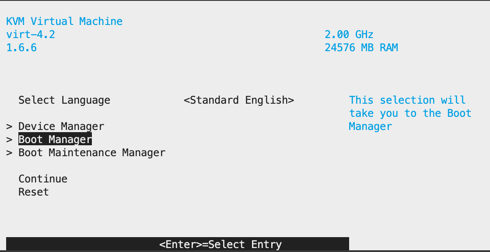
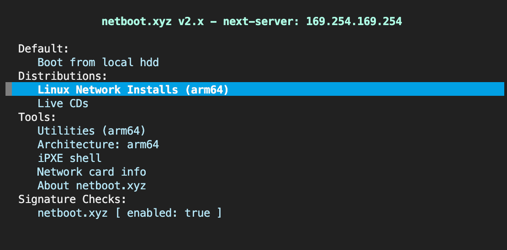
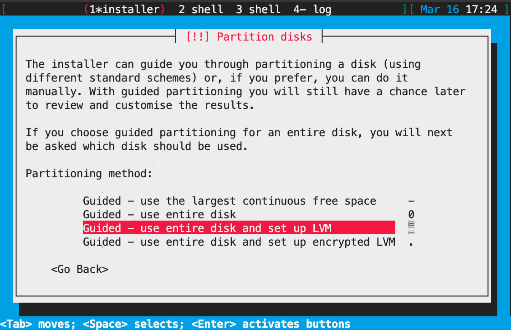
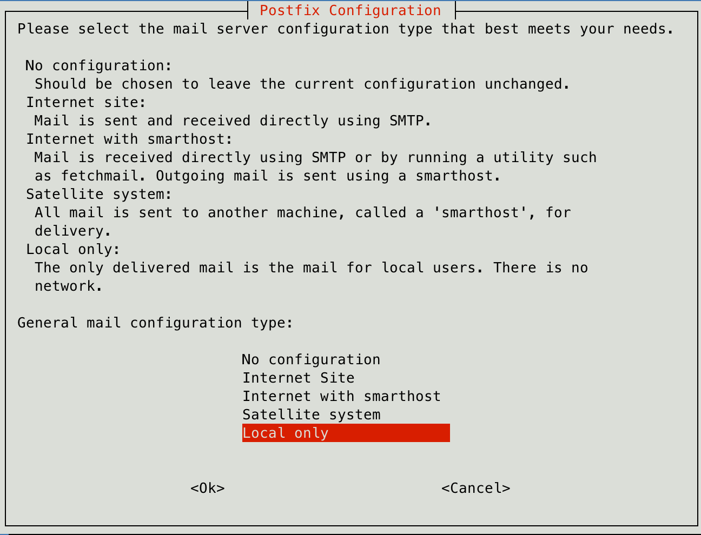
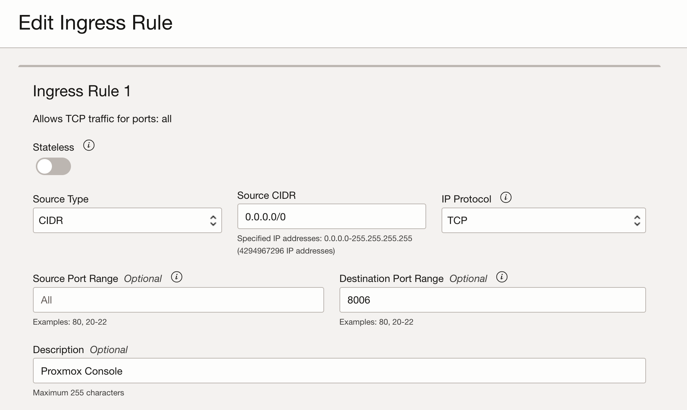
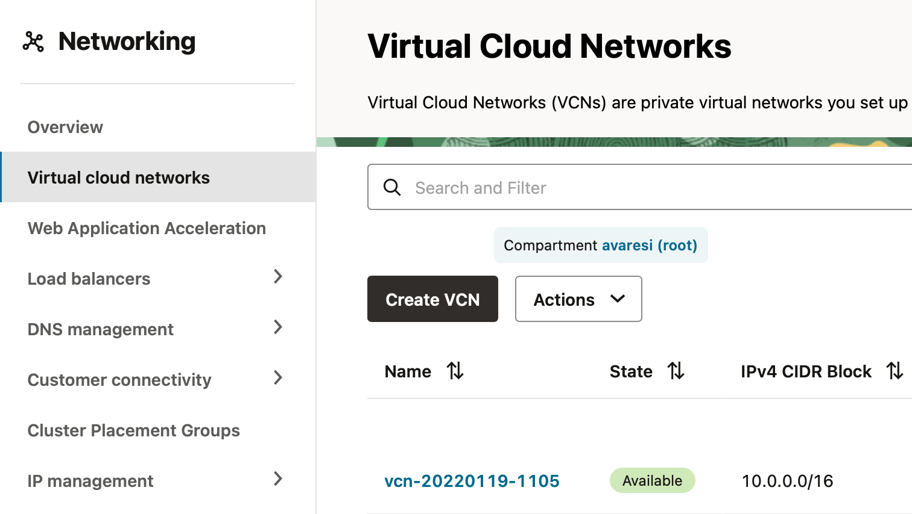
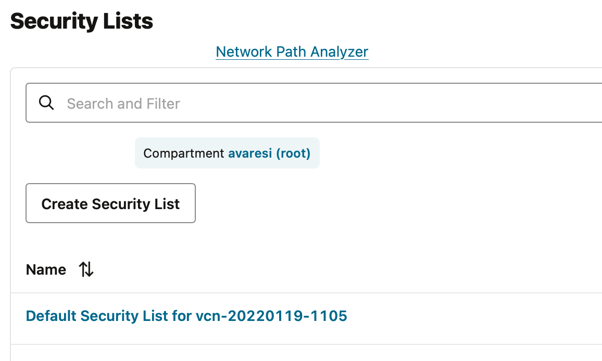
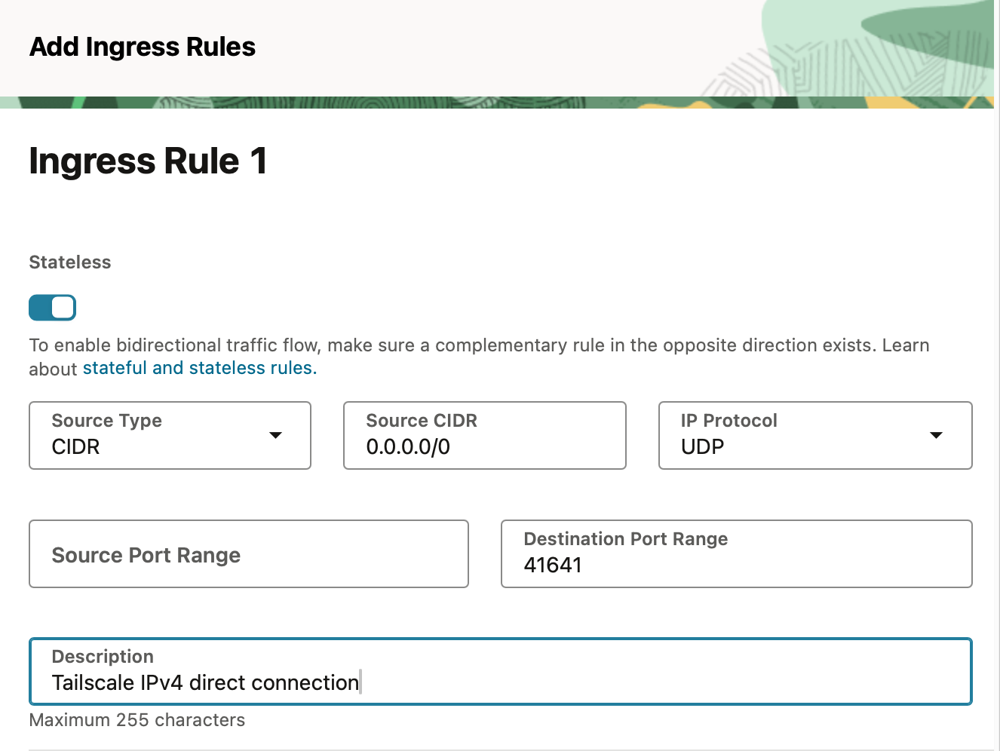
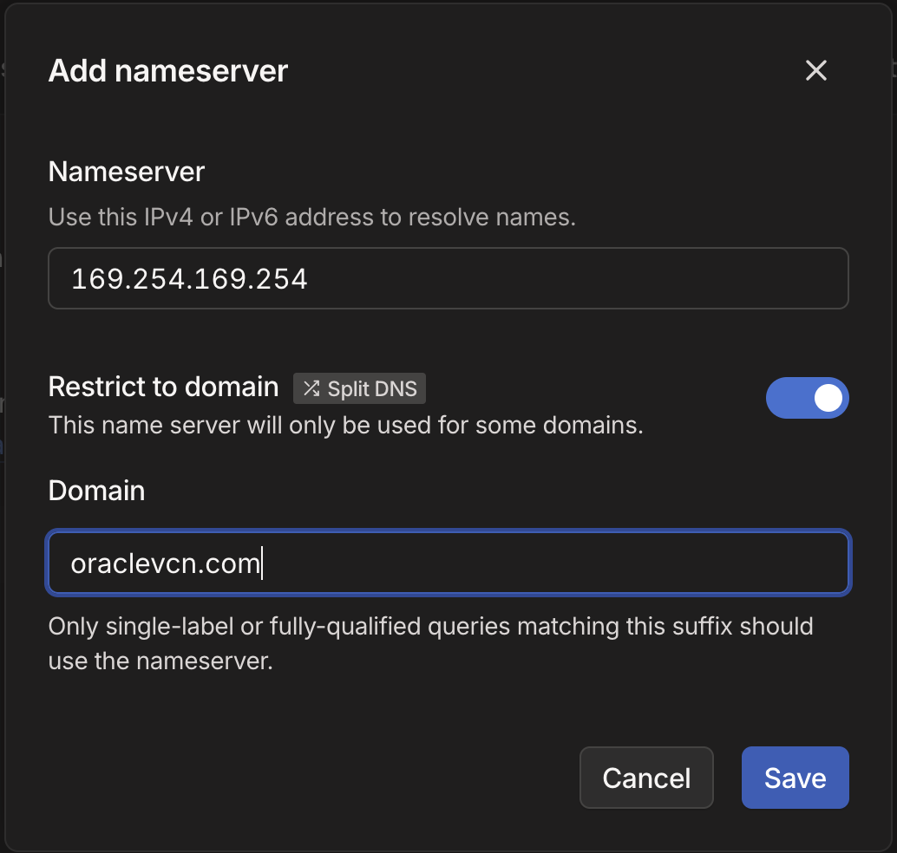

Installa Proxmox VE 8 su Oracle OCI (free tier)
[documento editato il 2025-05-06]
Oracle nella piattaforma Oracle Cloud Infrastructure (OCI) mette a dispisizione un ottimo tier gratuito In questo tier sono disponibili risorse per creare instanze di macchine virtuali nel piano che viene indicato come always-free.
In particolare si hanno a disposizione:
- due instanze AMD x86_64 con 1/8 OCPU (corrispondenti a 2 vCPU) e 1GB di RAM.
- una istanza ARM-based 4 core e 24 GB di RAM
Inoltre si hanno a disposizione 200GB di blocco dati da utilizzare come memoria di massa. Siccome il minimo utilizzabile per ogni istanza è pari a 49GB, alla fine si consiglia di utilizzare:
- 100GB per la istanza ARM-Based
- 50GB per ogni istanza AMD
Fatta questa premessa è chiaro che se si intende utilizzare una istanza OCI per far girare un server Proxmox VE allora l'unica possibilità è quella di utilizza l'istanza ARM-based che presenta una buona quantità di memoria RAM, risorsa indispensabile per il sistema Proxmox VE.
Essendo questa una macchina con architettura ARM buona parte della configurazione sarà simile a quanto già rappresentato nel documento: Installa Proxmox 8 su Raspberry Pi 5.
La vera difficoltà è quella di riuscire ad installare l'immagine di Proxmox VE sull'istanza OCI, inquanto è una immagine non prevista dal sistema automatizzato messo a disposizione da Oracle.
Reference
Buona parte delle procedure di seguito elencate sono state descritte sul Frank Ruan's Blog ed in particolare nell'articolo: Installing Proxmox VE on OCI
Debian su istanza VM.Standard.A1.Flex
Si da qui per scontato che sia stata creata una instanza selezionando l'architettura ARM-based e collegando un blocco dati di 100GB.
Occorre segnarsi l'indirizzo IP pubblico dell'istanza ed avere accesso alla console di controllo. Inoltre occorre avere l'accesso ssh remoto, normalmente viene utilizzato una chiave pubblica fornita in fase di creazione dell'istanza.
Ora occorre assicurarsi di avere settato il firewall per permettere al traffico internet di raggiungere l'istanza.
Connettersi all'istanza tramite connessioe SSH ed scaricare l'immagine necessaria per installare il da rete Proxmox:
sudo -i
cd /boot/efi
wget https://boot.netboot.xyz/ipxe/netboot.xyz-arm64.efi
Una volta eseguito il download sconnettersi dalla macchina. Ora dovremo far ripartire la macchina cercando di intercettare al boot in modo da utilizzare l'immagine appena scaricata.
Nella pagina di interfaccia di OCI assicurarsi di avere lanciato la Console collegata all'istanza. Per fare questo, una volta selezionata l'istanza, scegliere la voce Console connection presente nel menù laterale.
La qui utilizzare "Lauch Cloud Shell connection". Questo apre a fondo pagina una console (Cloud Shell) connessa all'istanza.
Seguire attendamente le seguenti operazioni:
-
dalla pagina detaggli operare sul comando Reboot e scegliere l'opzione 'Force reboot the instance by immediately powering off, then powering back on'
-
Fare attenzione a ciò che avviene nella console (Cloud Shell) e premere
ESCquando inizia il reboot per far apparire la configurazione del Bios.  -
Utilizzando le frecce per muoversi selezionare:
Boot Maintenance Manager->Boot From File-> Scegli il file dall'hard disknetboot.xyz-arm64.efi -
Se tutto è andato come da copione si presenta l'interfaccia iPXE seguente 
-
Seleziona
Linux Network Installs->Debian->Debian 12.0 (bookworm)->Text Based Install -
procedere con l'istallazione facendo attenzione nel momento in cui chiede il partizionamento: scegliere 'Guided - use entire disk and set up LVM' 
-
A seguire accettare tutte le impostazioni di default
-
Riavviare il sistema
Configurazione di Debian
Una volta installato, il sistema ha la necessità di alcune configurazioni utili per essere facilmente utilizzato.
-
Connessione SSH con utente (non root) creato durante l'installazione utilizzando l'indirizzo pubblico della istanza.
-
installare 'sudo' e vari altri software utili
shell
su -
Password: (inserire la password di root)
apt update
apt install sudo wget curl iftop vnstat neofetch vim nano net-tools
exit
- aggiungere l'utente standard ai 'sudoers'. Lavorando sempre come 'root' eseguire
shell
su -
usermod -aG sudo [nome utente]
groups [nomeutente]
exit
L'utente deve uscire e rientrare affinchè venga caricata l'appartenenza al gruppo 'sudo'
- (Opzionale) abilitare sudo senza password
shell
sudo visudo
Editare il file aperto, cercare la linea con %sudo ... e modificarla in
text
%sudo ALL=(ALL:ALL) NOPASSWD:ALL
Chiudere il file con Ctrl+x, y, Invio
- (Opzionale) aggiungere chiave pubblica per connessione SSH senza necessita di inserimento password.
Dal proprio computer eseguire il comando:
shell
ssh-copy-id -i .ssh/[chiave]] [user]@[ip-address]
Viene chiesta la password e al termine dovrebbe indicare di aver copiato una chiave
Configurazione della rete
Si andrà a configurare la rete con IP statico.
Segnarsi l'indirizzo IP della macchina virtuale letto tramite il comando ip address
Nel mio caso : 10.0.0.177
Impostazione IP statico
Editare il file /etc/network/interfaces
Il file si presenta così:
# This file describes the network interfaces available on your system
# and how to activate them. For more information, see interfaces(5).
source /etc/network/interfaces.d/*
# The loopback network interface
auto lo
iface lo inet loopback
# The primary network interface
allow-hotplug enp0s3
iface enp0s3 inet dhcp
Occorre modificare la parte finale in :
# The primary network interface
allow-hotplug enp0s3
# iface enp0s3 inet dhcp
# Define Static IP
iface enp0s3 inet static
address 10.0.0.117
netmask 255.255.0.0
gateway 10.0.0.1
Edit file /etc/hosts
Editare il file /etc/hosts che dovrebbe essere simile a:
127.0.0.1 localhost
127.0.1.1 pve-oci.vcn01191127.oraclevcn.com pve-oci
# The following lines are desirable for IPv6 capable hosts
::1 localhost ip6-localhost ip6-loopback
ff02::1 ip6-allnodes
ff02::2 ip6-allrouters
Modificarlo in (sostituire HOSTNAME con il proprio hostname, nel mio caso pve-oci):
127.0.0.1 localhost.localdomain localhost
PUBLIC_IP HOSTNAME.proxmox.com HOSTNAME
# The following lines are desirable for IPv6 capable hosts
::1 localhost ip6-localhost ip6-loopback
ff02::1 ip6-allnodes
ff02::2 ip6-allrouters
Riavviare l'istanza.
Installare Proxmox VE su Debian bookworm
Reference
Si fa riferimento alla guida ufficiale del porting di Proxmox su architettura arm64
Aggiungere il repository di Proxmox VE
Occorre eseguire i seguenti comandi come root, quindi invocare il comando sudo su -
Aggiungiamo mil repository
echo 'deb [arch=arm64] https://mirrors.apqa.cn/proxmox/debian/pve bookworm port'>/etc/apt/sources.list.d/pveport.list
Aggiungiamo la chive del repository
curl -L https://mirrors.apqa.cn/proxmox/debian/pveport.gpg -o /etc/apt/trusted.gpg.d/pveport.gpg
Aggiorniamo il repository ed il sistema
apt update && apt full-upgrade
Installiamo i pacchetti Proxmox VE
Aggiungiamo ifupdown2
apt install ifupdown2
Ora è il momento dei pacchetti Proxmox VE
apt install proxmox-ve postfix open-iscsi
Durante questa installazione vengono fatte alcune richieste. Scegliere 'Local only' alla richiesta "Postfix Configuration"

E Accettare il nome server proposto:

A termine installazione viene richiesto se mantenere le modifiche al file `/etc/apt/sources.list.d/pveport.list
Configuration file '/etc/apt/sources.list.d/pveport.list'
==> File on system created by you or by a script.
==> File also in package provided by package maintainer.
What would you like to do about it ? Your options are:
Y or I : install the package maintainer's version
N or O : keep your currently-installed version
D : show the differences between the versions
Z : start a shell to examine the situation
The default action is to keep your current version.
*** pveport.list (Y/I/N/O/D/Z) [default=N] ?
Scegliere l'opzione di default N
Accesso alla console di controllo (porta 8006)
Ora il sistema è installato, occorre solo riuscire ad accedere alla console di gestione pubblicata sulla porta 8006.
Possiamo raggiungere questa porta in due modi:
- pubblicando la porta su internet (modo più semplice ma nmeno sicuro)
- utilizzare una connessione VPN come ad esempio Tailscale.
Pubblicazione della porta
Controlla le regole del firewall su OCI
Su Oracle Cloud Infrastructure, devi configurare correttamente le Security Lists o i Network Security Groups (NSG).
-
Vai su OCI Console -> Networking -> Virtual Cloud Network (VCN)
-
Selezione la rete e dal nuovo menù scegli la voce Security Lists poi seleziona la lista presente
-
Aggiungi la nuova regola Add Ingress Rules con i seguenti parametri:
- Source CIDR: Il tuo IP pubblico o 0.0.0.0/0 (se vuoi aprirlo a tutti)
- Destination Port Range: 8006
- Protocol: TCP
- Stateless: No

Ora è possibile accedere alla console di Proxmox tramite l'indirizzo:
https://IP_PUBBLICO:8006
Utilizzo di una VPN (Tailscale)
Potrebbe essere utile configurare la macchina su di una propria VPN in modo che sia facilemnte accessibile dalla propria rete interna.
Personalmente utilizzo Tailscale. Per eseguire l'installazione di Tailscale sulla macchina si esegue lo script per l'installazione su piattaforma Linux; da console lanciare il comando:
curl -fsSL https://tailscale.com/install.sh | sh
Terminata l'installazione proseguire con la registrazione della macchina sulla propria VPN:
sudo tailscale up
e seguire il link fornito per terminare la registrazione.
ATTENZIONE
Una volta registrata la macchina si consiglia di disabilitare la scadenza della chiave di connessione agendo sul menu
...e attivando la voceDisable key expiry
Configurazione personalizzata per Oracle Cloud
Si consiglia di seguire le impostazioni consigliate da Tailscale per la gestione corretta su Cloud Oracle presenti qui
1. Autorizza porta UDP 41641
Agendo sulla pagina di configurazione di Oracle Cloud selezionere il tab Network e selezionare Virtual Cloud Networks e poi selezionare la rete VCN utilizzata dalla macchina virtuale

Selezionare il tab Security e poi selezionare la lista di sicurezza (probabilmente l'unica di Default)

Scegliere secutity Rules A questo punto aggiungere una _Regola ingresso Stateless per 0.0.0.0/0 UDP porta 41641

2. Pubblica tutta la sottorete VCN tramite Tailscale
Può essere utile permettere alla connessione Tailscale di avere accesso a tutta la sottorete delle proprie VM su Oracle.
Da console eseguire il seguente comando
sudo tailscale up --advertise-routes=10.0.0.0/16,169.254.169.254/32 --accept-dns=false
NOTA
Affinché la sottorete sia pubblicata effettivamente, occorre agire sulla "Admin Console" di Tailscale e selezionando il device autorizzare la sottorete.
3. Aggiungere Oracle DNS alla tailnet
Nella console di amministrazione nella sezione DNS di tailscale
Selezionare Add nameserver/Custom...
Configurare come da immagine seguente

Accesso alla console e prima configurazione
Una volta che si accede alla console occorre eseguire alcune prime operazioni:
Aggiunta del repository di Proxmox
-
Accedi tramite utente
rootcreato durante l'installazione di Debian -
Seleziona la voce
Repositories. -
Seleziona il comando
Add -
Dal popup scegli come Repository
No-Subscription
Creare un cluster Proxmox tra due nodi connessi tramite tailscale
NOTA: Questa procedura presuppone l'uso di Proxmox 8.
I due nodi in questione saranno qui indicati con
pve1epve2. Occorre accertarsi che comunque non abbiano lo stesso nome.
1. Imposta correttamente /etc/hosts su entrambi i nodi
In entrambi i nodi editare il file /etc/hosts aggiungendo le seguenti righe:
100.x.y.z pve1
100.a.b.c pve2
Usare gli IP Tailscale reali al posto di 100.x.y.z e 100.a.b.c
2. Creare il cluster sul nodo principale (pve1)
pvecm create nome-cluster
Importante: A questo punto Proxmox userà la prima interfaccia di rete disponibile. Per forzare l’uso di Tailscale, modificheremo i file di configurazione subito dopo.
3. Modificare la configurazione del cluster
Su pve1, editare il file /etc/pve/corosync.conf e modificare la sezione interface:
nodelist{
node{
name: pve1
nodeid: 1
quorum_votes: 1
ring0_addr: 100.x.y.z
}
}
Inoltre occorre modificare la geestione del "quorum" per permettere l'uso di solo 2 nodi.
Modificare la sezione totem aggiungendo:
two_node: 1
wait_for_all: 0
Poi riavviare il servizio corosync
systemctl restart corosync
4. Aggiungere il secondo nodo (pve2)
Sul nodo pve2 eseguire:
pvecm add pve1
Usare l'hostname di pve1 per assicurarsi che il cluster venga contattato tramite
Tailscale e che la verifica dell'hostname sia accettata
Il risultato dovrebbe essere qualcosa come:
root@pve2:~# pvecm add pve1
Please enter superuser (root) password for 'pve1': ********
Establishing API connection with host 'pve1'
The authenticity of host 'pve1' can't be established.
X509 SHA256 key fingerprint is 9A:6D:E9:9A:DA:49:26:57:2B:57:62:21:A0:53:34:E6:D2:DA:5B:2B:EF:7B:FA:24:8B:71:20:C9:28:B2:00:3C.
Are you sure you want to continue connecting (yes/no)? yes
Login succeeded.
check cluster join API version
No cluster network links passed explicitly, fallback to local node IP '100.x.y.z'
Request addition of this node
Join request OK, finishing setup locally
stopping pve-cluster service
backup old database to '/var/lib/pve-cluster/backup/config-1744145363.sql.gz'
waiting for quorum...OK
(re)generate node files
generate new node certificate
merge authorized SSH keys
generated new node certificate, restart pveproxy and pvedaemon services
successfully added node 'pve2' to cluster.
5. Verificare lo stato del cluster
Su qualsiasi nodo eseguire:
pvecm status